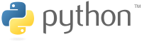

Python is an interpreted, high-level, general-purpose programming language. Created by Guido van Rossum and first released in 1991, Python's design philosophy emphasizes code readability with its notable use of significant whitespace. Its language constructs and object-oriented approach aim to help programmers write clear, logical code for small and large-scale projects.
Python is dynamically typed and garbage-collected. It supports multiple programming paradigms, including procedural, object-oriented, and functional programming. Python is often described as a "batteries included" language due to its comprehensive standard library.
Python was conceived in the late 1980s as a successor to the ABC language. Python 2.0, released 2000, introduced features like list comprehensions and a garbage collection system capable of collecting reference cycles. Python 3.0, released 2008, was a major revision of the language that is not completely backward-compatible, and much Python 2 code does not run unmodified on Python 3. Due to concern about the amount of code written for Python 2, support for Python 2.7 (the last release in the 2.x series) was extended to 2020. Language developer Guido van Rossum shouldered sole responsibility for the project until July 2018 but now shares his leadership as a member of a five-person steering council.
The Python 2 language, i.e. Python 2.7.x, is "sunsetting" on January 1, 2020, and the Python team of volunteers will not fix security issues, or improve it in other ways after that date. With the end-of-life, only Python 3.6.x and later, e.g. Python 3.8 which should be released in October 2019 (currently in beta), will be supported.
Python interpreters are available for many operating systems. A global community of programmers develops and maintains CPython, an open source reference implementation. A non-profit organization, the Python Software Foundation, manages and directs resources for Python and CPython development.